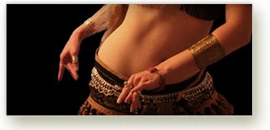

Brid's Closet
296 Main Street
Cornwall NY 12518
Bernadette Montana
(845)458-8726
CLASSES AND EVENTS AT BRID'S CLOSET!
|
||
Interactive and Intensive Tarot Courseat Palaia Vineyards, 10 Sweet Clover Rd. Highland Mills 10930 Are you interested or love the the art of the tarot? Whether you are a beginner, intermediate or advanced-this course is for you! We will start the day getting to know one another, then jump right in to all the work and information that will be presented. 9-9:30 Setting up-introductions 9:30 class officially starts. 1: We will start with some history about the tarot, what symbols and archetypes mean and how they apply to the tarot. 2: The Fools journey and how that applies to our lives. 3: The Court cards-how they relate to our lives as family and community. 4: The four suits of the tarot. The elements related to those suits. 5: The Kabbalah and the tarot. 6: Hands on work. This will be VERY interactive! 7: Tarot spreads. There will be a Q & A after each lesson. Worksheets will also be available to everyone. I suggest bringing your own deck(s) and a pen a paper. This class will take you from beginner to advanced! Suggested decks-Rider-Waite-Smith deck, Robin Wood, Universal Waite deck, Sacred Circle, Sacred Rose,Visconti, The Witches Tarot..there are many more.. This will be a very informative and in depth class with a full PowerPoint presentation for each lesson. Please be on time! Palaia vineyards has a cash "bar" available is you would like to purchase their wonderful selection of wine, cheese, fruit and pizza that they sell. You may also bring a bag lunch. I will supply the tea and coffee for everyone!! This course will run from 9am until 4pm 7 hrs. $120 per person. Contact me here for any info you need!
An Intuitive approach to the Tarot
In the second class, we will work with different spreads, how to pick from the many different decks there are, set up sacred space etc. we will reading for one another, so be prepared to be a part of a very interactive class! I will offer these classes to the meetup group for $60 for both sessions. I normally charge $45 per class at the store. The class dates are TBA Call or write me ..458-8726 store or write to me through meet up. I accept MC/VISA and checks.
An introduction to Wicca and Witchcraft
This class is an introduction to Wicca and Witchcraft by Bernadette Montana 3rd degree Alexandrian Priestess-tarot reader & teacher, for over 20 years and owner of Brid's Closet Metaphysical shop!
The Brid's Closet Psychic Faire& Bake Sale! Oct. 19th, 2013 @11am. Our readers (so far) Chad Braymen (Rune readings) Gina Palaggi- tarot and Lenormand readings David Snowdeal
Tarot readings (reservations are recommended) & classes, Reiki sessions, Spiritual Counseling, Weddings, Blessings and much more, are available. Please call us with any questions you may have. |
||


